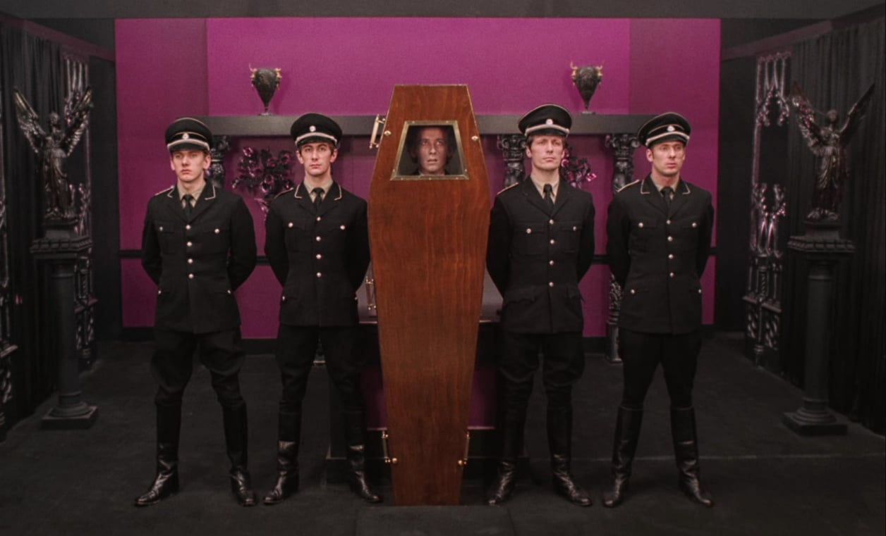
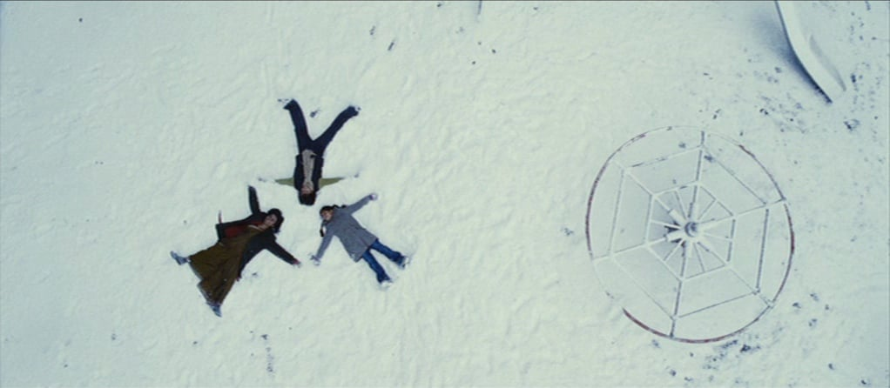
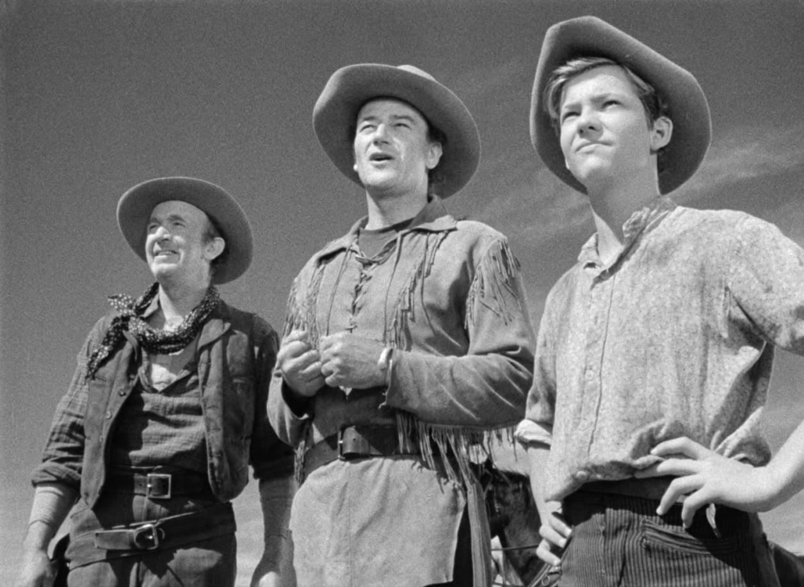
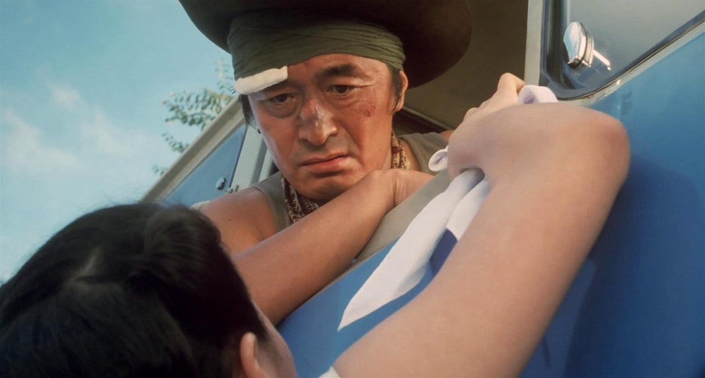

Best AI Website Creator构图线展

画面采用严格的对称构图，主体位于画面正中央，左右两侧元素在位置与形态上保持平衡，使整体视觉显得稳定、有秩序，并强化了画面的仪式感与庄重氛围。
The image uses a strict symmetrical composition, with the main subject placed at the center. Elements on both sides are balanced in position and form, creating a sense of stability, order, and a strong ceremonial atmosphere.

画面采用顶视角度拍摄，从上方俯视人物与环境，使人物在广阔的背景中显得渺小，同时强化了空间关系与整体结构感，营造出冷静而疏离的视觉效果。
The image is captured from a top-down perspective, looking directly down on the subjects and their surroundings. This viewpoint makes the figures appear small within the wide environment, emphasizing spatial relationships and creating a calm, detached visual tone.

画面运用了引导线构图，通过人物的视线与身体朝向，将观众的注意力自然引向画面前方与远处，增强了空间感与前进的动势。
The image uses leading-line composition, with the characters’ gaze and body direction guiding the viewer’s attention toward the distance, enhancing a sense of depth and forward movement.

画面采用低角度构图，镜头从下方仰拍人物，使角色在画面中显得更加有力量和存在感，同时拉近观众与人物情绪之间的距离，强化了紧张与压迫的氛围。
The image uses a low-angle composition, with the camera positioned below the subject and shooting upward. This perspective enhances the character’s presence and strength, while intensifying the emotional tension and sense of pressure within the scene.
Best AI Website Creator